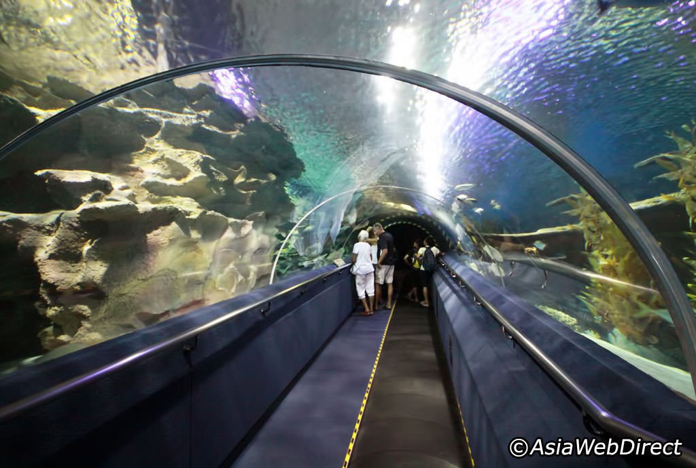
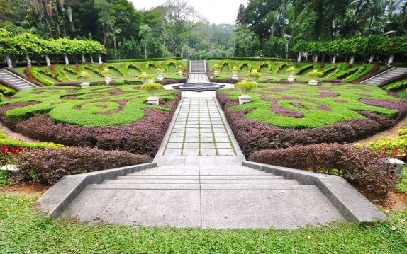
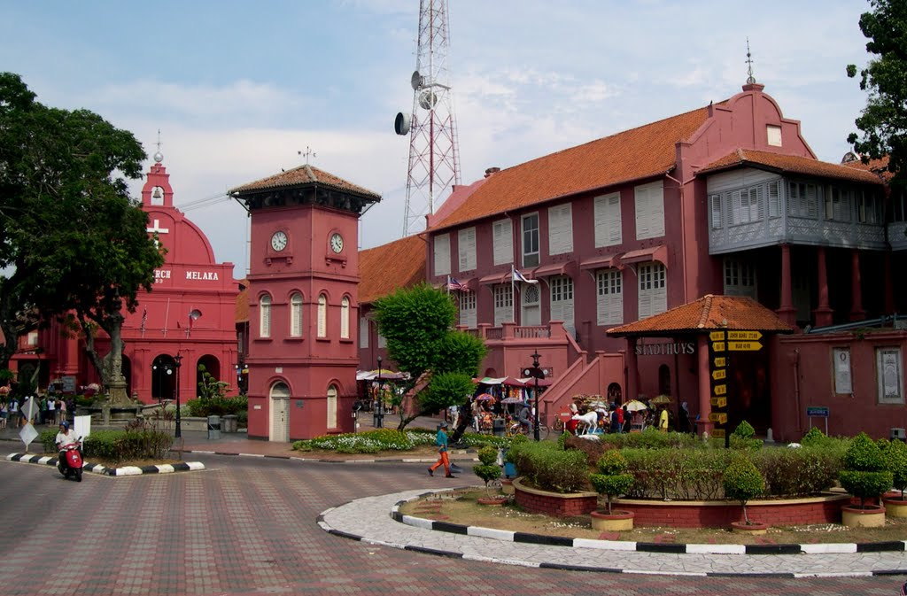

| Petronas Twin Tower | Aquaria KLCC | Thean Hou Temple |
|---|---|---|
 |
 |  |
| Service catalog: Food tripping, Trekking, Land tour, Market tour, City tour, Swimming. You can go there at 10am. Plan to stay: 1-2 hours. | You can discover Malaysia’s thriving marine life at the Aquaria Kuala Lumpur City Center. You can go there at 3pm. Plan to stay: 3hours. | Visitors can have their fortune told at the prayer hall. There are 3 'fortune telling' machines. You can go there at 6pm. Plan to stay: 1hour. |
| Sultan Abdul Samad Building | Batu Caves | Perdana Botanical Garden |
|---|---|---|
 |
 |
 |
| Enjoy a day exploring attractions in and around Kuala Lumpur on this sightseeing, Telephone Support,Guaranteed Low Price. You can go there at 11pm. Plan to stay: 1hour. | On your third day in Kuala Lumpur, visit Batu Caves so that you can admire the colourful Indian temples and architecture. You can go there at 1pm. Plan to stay: 1-2 hours. | You can enjoy the nature while your in middle of a big city. Themen place is huge and clean. It opens from 8:30 to 5pm,so you can go at 3pm. Plan to stay: 1-2 hours. |
| Christ Church | The Stadthuys | Melaka Sultanate Palace Museum |
|---|---|---|
 |
 |  |
| They have service at this campus on Saturdays at 5PM, Sundays at 9:30AM and again at 11:30AM. You can go there at 9:30 am. Plan to stay: 2hours. | You can find fun events, attractions, dining, Music and Nightlife options abound in Stadthuys. You can go at 2pm. Plan to stay: 2hours. | You can visit the museum as part of a tour of Melaka’s historical sights. You can go there at 4pm. It opens from 9am to 5pm,closes on Fridays. Plan to stay: 1hour. |
| Mini Malaysia & ASEAN Cultural Park | A'Famosa Fort | Jonker Street |
|---|---|---|
 |
 |
 |
| you can learn an interest in traditional architecture and ways of life, this is a great place to go exploring. You can go there at 10am. Plan to stay: 1hour. | You can see two of the gateways to the fort, including the Santiago Gate, as well as the stadthuys, church and jail. You can go there at 4pm. Plan to stay: 1-2hours. | Every Friday, Saturday and Sunday evening starting 6 p.m., the street is blocked for traffic and turns into night market. You can go there at 6pm. Plan to stay: 3hours. |
| Penang Hill | Adventure Zone Theme Park | Penang Interactive 3D Museum |
|---|---|---|
 |
 |
 |
| Trains run from 06:30 when the first train leaves the bottom of the hill until 23:00 when the last train leaves the top of the hill. You can go there at 9am. Plan to stay: 3hours. | Family-style activities where children, teens and adults can interact together in a safe environment. It opens from 10am to 5pm,you can go there at 2pm. Plan to stay: 2hours. | You can enjoy a rope course, mini golf, a 4D theater and more attractions at our Fort Walton Beach theme park. You can go there at 7pm. Plan to stay: 2hours. |
| Price List | |
|---|---|
| Numbers of people | Usual Price |
| Single | $3200 |
| Dual | $6400 |
| Triple | $9000 |
| Four and above | $3000 for each |